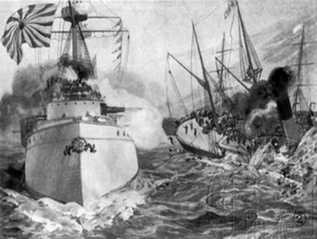

Millennium Bureau
-
First Opium War
-
Sino-Japanese War
-
 British and French coalition fires Yuanmingyuan
British and French coalition fires Yuanmingyuan -
Eight-nation coalition forces invaded China
-
 Westernization Movement
Westernization Movement -
 Wuxu Reform
Wuxu Reform -
 Xinhai Revolution
Xinhai Revolution
Imperialist aggression and expansion.
First Opium War
In June 1840 from 28 August 1842, the Qing Daoguang Emperor twenty to twenty - two, Britain declared war on the Manchu smuggling opium. It caused a war, the war was triggered by British merchants in Canton, China, opium smuggling waters more than twenty years, the increasing of Lin Zexu in 1839 in Guangdong forcibly destroyed,In English contradictions are gradually upgraded, while the war reparations to China's defeat and cession of the territory.In the signing of the Treaty of Nanking in modern China. It is the first unequal treaty, in addition to reparations, the Hong Kong permanently ceded to Britain, and Britain obtained extraterritorial.Since then, China has step - by - step semi - colonial and semi feudal society.
Second Opium War
In 1856 - 1860.Britain and France for the Chinese market to expand in the interests of the aggression, while China Taiping, Alor incident and Ma abb events as a pretext to join in the attack against the government of the war.In 1860, the Anglo - French swept into Peking, the Qing emperor fled to Chengde, the anglo - french forces invaded and pillaged the Yuanmingyuan in jewelry, burned it.Russia sent in troops after the war to "active mediation" itself, and the Qing government ceded the stress of 1.5 millions square kilometers of territory, thus becoming the biggest winner.War to the Chinese Qing government into sig the "Beijing Treaty" is ended.Second Opium War and forced the Qing Government has signed the "Tianjin Treaty" and the "Beijing Treaty" in Russian "Treaty of Aigun" or the like and, more in - depth against invasions.Thus China and Northwest China and lost a total of 150 square kilometers of territory, and after the war the Qing government to be able to concentrate on the crackdown on the Taiping Heavenly Kingdom, hold on to power.
Sino - Japanese War in 1894
By 1894, the Meiji Restoration of Japan starts on the capitalist road, while actively aggression, China - centric "Mainland Policy"; at this time of the Qing Dynasty (1644 - 1911) is one of the Empire by the Self - Strengthening Movement Borrowed, political corruption, people living in poverty, and the bureaucratic factions and infighting, intrigues,National defense military weakness, strictly abide by discipline; the world's major capitalist countries and the gradual transition of imperialism, Japan's acts of aggression on a certain degree of Western support.Guangxu 20 (1894), on 25 July, the Battle off after an outbreak of the Sino - Japanese War began, the Japanese invade, and ran against the Qing Dynasty (1644 - 1911), China's defeat in the war, the Northern navy.China's Qing government was forced by the Japanese militarism of military pressure, on April 17, 1895 and signed the Treaty of Shimonoseki.Sino - Japanese War to Chinese people, and a result of the unprecedented national crisis, and greatly deepened the degree of colonization of Chinese society
Eight - Power Allied Forces invaded
In Spring 1900, the Boxer Rebellion became the Eight - Nation Allied Army, 1937 as a pretext, to crush the Boxer Rebellion, in the name of grabbing and plundering China.In 1900, on 14 August, the city has completely occupied, the Eight - Power Allied Forces, killing, raping and pillaging! from the Forbidden City, Zhongnanhai, the Summer Palace in the theft and looting of the treasures are even more numerous! where the famous's Garden of Yuanmingyuan "after following the Anglo - French again sacked and eventually in the ruins.Commander in Chief of Allied Forces in later admitted, "All the Chinese suffered damage and looting of loss, I would refer him to the number".In 1901, 9 - 7 to the "xin chou treaty" was signed as a result, China has since completely into a semi colonial and semi feudal society to the vicinity of the country and the people and brought unprecedented address about the disaster.
China's society and exploring various
learn to Conquer
After the First Opium War, Lin Zexu's own collection of "Law of the People's Republic of China and other foreign papers to Wei Yuan, wishing he could book, awakening people to understand the world.A year later, the first systematic introduction to the world of the Chinese classic "Haiguo Tuzhi" completed, wrote the first - generation "eyes to see the world the Chinese people," the future of the country.
Westernization Movement
19 from the 1960s to the 1990s by the foreign affairs and with the introduction of Western military equipment, machine production, science and technology in order to safeguard the rule of the Qing Dynasty's salvation movement ", with the slogan" self ", and later with the slogan" rich ".Westernization Movement was carried out for 30 years did not make China rich and powerful, but the Westernization Movement has introduced the advanced scientific technology from the West, China recorded its first modern enterprises, as the national development of capitalism.
The Reform Movement of 1898
After the Sino - Japanese War in 1894, Kang Youwei, Liang Qichao as representative of the reformist Guangxu Emperor in advocacy through the Western learning, to advocate science and culture, political reform, the education system, developing agriculture, industry and commerce of bourgeois reform movement.The Reform Movement of 1898 is a patriotic salvation has the significance of the reform movement, China's modern history and a major political reform, is also a time of the Enlightenment, promoted the emancipation, social progress and ideological and cultural development, promote the progress of modern Chinese society plays a significant role in driving.
Revolution of 1911
A.D. from 1911 to 1912 at the beginning of the year, aimed at overthrowing the Qing Dynasty autocratic monarchy, the establishment of republican revolution nationwide.1911 was a relatively full sense of the national democratic revolution.To its political and ideological fields, and the Chinese people to the cause of liberation.The Revolution of 1911 starts the thoroughly modern, national and democratic revolution which overthrew the autocratic monarchy that had ruled China for several thousand years, and established a republic, ending the monarchy.Propagated the democratic and republican belief, has greatly promoted the emancipation of the Chinese nation to great influence and coverage has promoted social change.
© Copyright 2018 by Guangxi University La Cheerleading. All Rights Reserved.